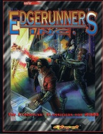

|  | Fiche technique |
| Supplément pour le jeu de rôles Cyberpunk 2020, édité par R. Talsorian Games (1995) | |
| Langue | Anglais |
| Thème | L'ANPE en 2020 |
| Qualité du background | 4 / 5 |
| Qualité des scénarii | 2 / 5 |
| Qualité des règles | - |
| Qualité des illustrations | 3 / 5 |
| Qualité de l'écriture | 5 / 5 |
Je suis toujours dubitatif sur l'utilité de ce supplément qui clame s'inspirer de Tales from the Forlorn Hope et propose une corporation qui joue à l'ANPE pour cyberpunks (?!). En substance on trouve le profil de la-dite corporation "StreetTemps", et la description d'une trentaine de PNJ employés de celle-ci. Ensuite, une série de dossier sur certaines corporation utilisant du "personnel temporaire" est joint à une série de proposition de contrats. C'est un peu le ManPower des flingueurs, et c'est assez bien réalisé, même si l'on peut se poser des questions sur la légalité du mercenariat en 2020. A mon avis, ce supplément peut inspirer un MJ qui désire une base de départ fixe pour les PJ, une sorte d'employeur de base tout en gardant une certaine diversité dans l'action. Cela peut également déboucher sur une ambiance "Agence tous Risque". A réserver à ceux qui préfèrent des scénarii de type "votre mission si vous l'acceptez...", et cherchent un point de départ sans que les PJs se fassent toujours recruter dans les bars.
{kind=link}